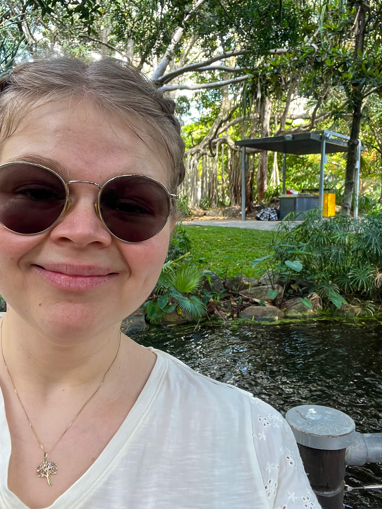

Hi there, I'm Kathrine 👋
I'm a front-end developer in development, passionate about crafting engaging and accessible web experiences. With a foundation in HTML, CSS, and JavaScript, I'm eager to expand my skills into frameworks and Tailwind CSS. Before diving into tech, I earned a master's in Classics and Ancient History—proving that whether it's ancient civilizations or modern code, I love unraveling complex systems. When I'm not coding, you'll find me cycling through Norway’s landscapes, lost in a book, knitting something cozy, or strategizing over a board game.